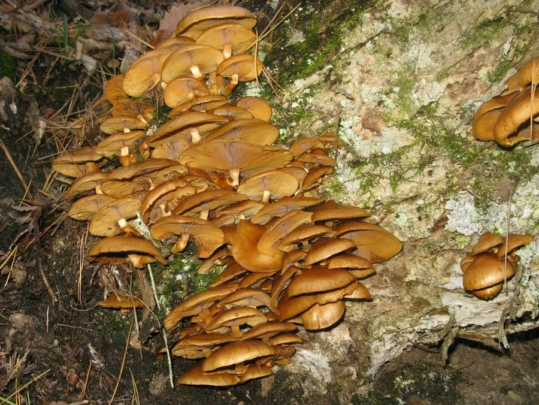

真菌 · 真菌界
滑子菇 Pholiota microspora

滑子菇的菌盖橙黄至黄褐色、表面有一层透明黏液，丛生于阔叶树枯木上，口感滑嫩，是日本和我国北方常见的栽培食用菌。
- 分类
- 门担子菌门纲伞菌纲目伞菌目科球盖菇科属鳞伞属
- 栖息环境
- 阔叶树枯木与树桩，栽培用木屑菌袋，喜低温高湿
- 地理分布
- 日本、中国东北与华北等地，多为人工栽培
- 保护级别
- 暂无评估（IUCN 未评估，栽培食用菌）
物种志
滑子菇是担子菌门球盖菇科的真菌，子实体丛生。菌盖初期半球形，后平展，直径 2–6 cm，表面橙黄色、黄褐色至淡黄褐色，覆盖一层透明或半透明的黏液，看起来水润发亮，因此得名“滑子菇”；菌肉淡黄色，薄而柔嫩。菌褶直生，白色至淡黄色，成熟后变为黄褐色。菌柄细长，长 5–10 cm，淡黄色，上部有膜质菌环，下部有细鳞片。孢子印锈褐色。
滑子菇生于阔叶树的枯木、树桩上，靠分解木材生长，在温带地区分布，日本、中国东北和华北有栽培，是日本料理中常见的食用菌。人工栽培多用木屑菌袋，在低温高湿条件下出菇，采收后常鲜食或制罐。滑子菇口感滑嫩、味道清淡，适合做味噌汤、炖菜、炒食和涮火锅；表面的黏液是它的特色，一般不必完全洗掉，但烹调时要充分加热，避免生食引起肠胃不适。
形态与习性
- 菌盖直径 2–6 cm，橙黄至黄褐色
- 表面覆盖透明黏液，水润发亮
- 菌褶白色至淡黄，成熟后黄褐色
- 菌柄细长，上部有膜质菌环
- 孢子印锈褐色
- 栽培木屑菌袋，低温高湿出菇
- 食用性可食，口感滑嫩，须熟食
趣味知识
- 滑子菇表面的那层黏液是它的标志，摸起来滑溜溜的。
- 它在日本叫“なめこ”，常放进味噌汤里。
- 滑子菇喜欢低温，出菇时菇房要控制在 10 ℃ 左右。
- 黏液不必完全洗掉，但一定要充分加热后再吃。